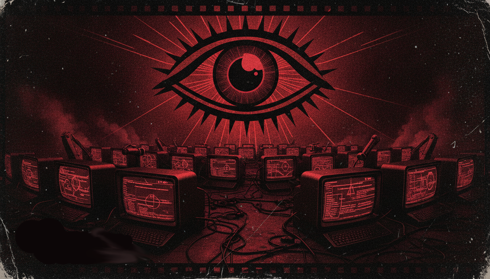

_In a dystopian society, the law doesn’t fail because it doesn’t exist. It fails because it’s treated like a prop-something you wave while the machinery quietly does what it was always meant to do: turn people into traceable units and make surveillance feel normal, necessary, and permanent.
_That’s why “consent” and “proportionality” become theatre. The system never needs to abolish rights in public. It only needs to outpace them. Deployers can point at the legal vocabulary-transparency language, privacy notices, internal “governance,” permitted purposes while building something that behaves like a control apparatus first and a protection framework second. _Start with the basic architecture of ID verification and camera surveillance. Once cameras can recognize a person, the city doesn’t just observe behavior; it attaches identity to behavior. And once identity is attached, everything becomes legible to power: movement through space, visits to locations, associations formed in public, patterns that can be reinterpreted later as “risk.” In that world, the legal promise of bounded use fights a structural reality: identity systems are inherently reusable. If a face can be matched once, it can be matched again! Across departments, across vendors, across “incidents,” across time. The capability is sticky even when the paperwork claims boundaries. _Consent is where the dystopia shows its teeth, because consent is not just a checkbox! It’s a condition for legitimacy. But in practice, consent is offered under the logic of exclusion: you can “choose” only if you can walk away without losing access to basic life. If the choice is “accept the camera identity system or miss the service,” what you actually get is coerced compliance disguised as autonomy. The system doesn’t need to cancel people openly; it just needs to make participation expensive. Once that’s how the world works, “consent” becomes a costume the state can wear while it normalizes coercion. _Proportionality suffers the same fate. Proportionality requires restraint: camera coverage where it’s truly necessary, not where it’s simply convenient or strategically useful. But the incentives of a surveillance program don’t aim for restraint. They aim for coverage because coverage produces data, and data produces leverage. The system gets “improved,” which is another word for expanded. One camera becomes a network. One use case becomes a bundle. One pilot becomes a platform. The regime does not need a single dramatic authoritarian decision; it needs a thousand small operational justifications that-together-turn everywhere into a potential evidence room. _And the real dystopian brutality is time. Rights are slow. Procurement is fast. Implementation is faster. When cameras go up, the harm is immediate: people adapt. They change routes. They avoid spaces. They decide what to say based on what might be logged and matched. Even if later legal reviews criticize a deployment, by then the social weather has already changed. The law arrives like a referee after the match is over. It can punish, but it can’t rewind the atmosphere. _This is why the tool is “tech-fascist” even when it doesn’t look like fascism. Fascist control historically relied on fear, spectacle, and visible domination. Modern tech-fascism relies on something cleaner: administrative inevitability. You don’t fear a boot; you fear being unable to authenticate. You don’t expect violence; you expect denial, delay, and friction small enough to seem like inconvenience, big enough to shape behavior. The state can keep smiling because the power is automated. The harm doesn’t require an officer in uniform. It requires a system that treats identity as access and access as compliance. _And vendors help, because the business model rewards expansion. A surveillance system is most valuable when it can be reused and integrated. That means the “safe” version in the contract is rarely the “real” version in operations. The system grows through interoperability, downstream analytics, and the inevitable creep of adjacent uses. That drift is how surveillance becomes infrastructure: not by breaking the law all at once, but by changing the practice faster than oversight can meaningfully update. _So the dystopia isn’t that the law is absent. It’s that the law is subordinated to deployment momentum. In that environment, every “safeguard” becomes something you satisfy for compliance rather than something you sustain for people. Notices exist, but understanding doesn’t matter. Assessments exist, but deployment drift matters less than launch deadlines. Rights exist, but remedies come after the identity linkage has already reshaped daily life. _In the end, this is the hypocrisy that makes the whole machine feel like a fascist tool: it claims to manage risk while manufacturing vulnerability and turning ordinary life into a contest you can’t win because the scoreboard is owned by whoever runs the verification system. The cameras don’t just record the city. They train the city to behave. And when a society behaves because it’s surveilled, the “consent” and “proportionality” become decorations—paper shields held up against a reality engineered to persist.Opt In, Get Watched: The Dystopian Logic of Identity Verification
